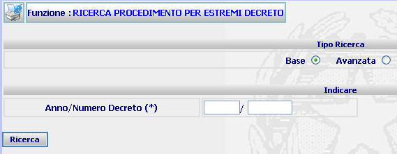
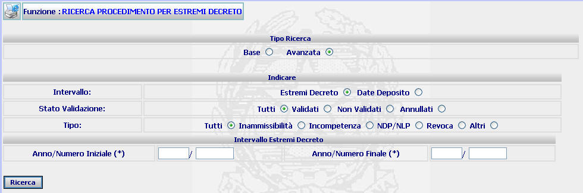
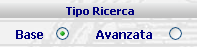
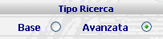

RICERCA PROCEDIMENTO PER ESTREMI DECRETO: La funzione consente di operare ricerche di decreti precedentemente depositati, attraverso alcuni canali di ricerca indicati nelle relative maschere
LE MASCHERE VIDEO
La funzione RICERCA PROCEDIMENTO BASE viene realizzata attraverso la maschera seguente in cui sono presenti due sezioni :
| Tipo Ricerca in cui posso selezionare la duplice modalità di inserimento dati: base - avanzata; |
| Indicare in cui l'utente ha la possibilità di inserire l'anno/numero Decreto che si vuole ricercare: |

Selezionando la modalità AVANZATA viene visualizzata la maschera in cui sono presenti tre sezioni :
| Tipo Ricerca in cui posso selezionare la duplice modalità di inserimento dati: base - avanzata; |
Indicare in cui l'utente ha la possibilità di inserire:
|
A
seconda della scelta effettuata dall'utente circa la tipologia di intervallo
per cui effettuare la ricerca:
|
Di seguito è riportata la maschera che ad esempio viene visualizzata quando viene specificato dall'utente l'alternativa "Intervallo Estremi decreto":

COME FARE PER ...
| Per effettuare la Ricerca di Procedimento del tipo BASE l'utente deve: |
- Selezionare, se necessario, il tipo di ricerca Base

Introdurre l'anno/numero decreto che si vuole ricercare.
Confermare i dati inseriti nella maschera agendo sul bottone
. Se l'ordinanza esiste, allora viene visualizzata la maschera di dettaglio decreto:
|
Per ricercare, attraverso la RICERCA AVANZATA, i decreti compresi in un determinato intervallo numerico impostato dall'utente è necessario: |
- Selezionare il tipo di ricerca Avanzata

Selezionare la tipologia di intervallo sulla quale basare la ricerca
Selezionare lo stato della validazione del deposito dei decreti;
Inserire nella sezione seguente l'anno/numero iniziale e finale dei decreti che si ha necessità di ricercare;
Confermare i dati inseriti nella maschera agendo sul bottone
|
Per ricercare, attraverso la RICERCA AVANZATA, i decreti compresi in un determinato intervallo temporale impostato dall'utente è necessario: |
- Selezionare il tipo di ricerca Avanzata
Selezionare la tipologia di intervallo sulla quale basare la ricerca
Selezionare lo stato della validazione del deposito dei decreti;
Inserire nella sezione seguente la data iniziale e la data finale dei decreti che si ha necessità di ricercare;
Confermare i dati inseriti nella maschera agendo sul bottone
CAMPI
I dati attraverso i quali è possibile effettuare la ricerca sono i seguenti:
| Anno/Numero Decreto (Ricerca Base) | Campo (obbligatorio) nel quale va inserito l'anno ed il numero del decreto da ricercare |
| Anno Numero Iniziale - Anno Numero Finale | Campi (obbligatori) attraverso i quali va inserito l'intervallo numerico relativamente al quale si vuole effettuare la ricerca |
| Data iniziale - Data finale | Campo (obbligatorio) attraverso il quale si può inserire l'intervallo temporale al quale si vuole limitare la ricerca. |
PULSANTI
E' presente il pulsante
 di stampa del contesto (videata)
di stampa del contesto (videata)
BOTTONI
Oltre ai comandi funzionali relativi al menù verticale sono presenti i seguenti comandi:
|
COMANDI |
DESCRIZIONE |
|
|
A fronte di tale comando, il sistema dopo aver verificato la validità dei dati specificati, presenta la maschera di dettaglio decreto ovvero, nel caso in cui più provvedimenti rispondano ai criteri di ricerca impostati, presenta l'elenco decreti |
CONTROLLI
A fronte della pressione
del bottone
 , il
sistema verifica che:
, il
sistema verifica che:
tutti i campi siano stati compilati correttamente
Esista uno o più procedimenti rispondenti ai canali di ricerca selezionati.
|
Se il sistema non troverà alcun provvedimento rispondente ai criteri di ricerca impostati verrà visualizzato il seguente messaggio |